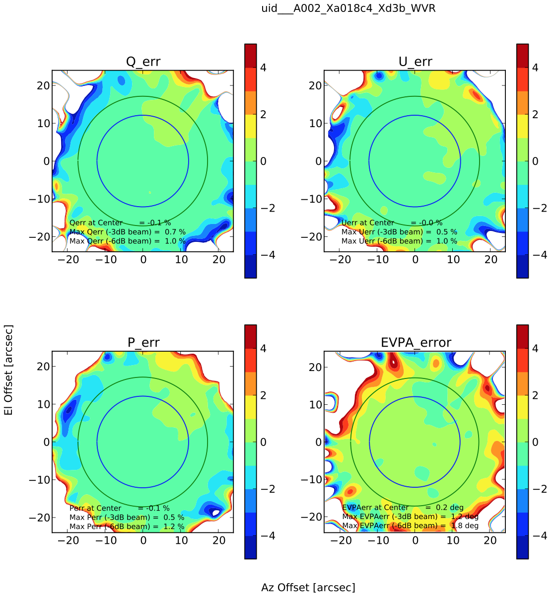

2017-12-13 Seiji Kameno
This document describes step-by-step procedure of data reduction for polarized beam characterization. This processes datasets of full-polarization astro-holography measurements and generates antenna-based in-beam maps of D-term spectra, in-beam maps of Stokes spectra, and error maps.
See also details of the methodology is described in the report ALMA Polarization Beam Characterization.
To clone scripts for the first time, type
then, a new directory 'ALMA_SV' is generated. All of scripts are stored there.
To update scripts, type in the ALMA_SV directory
It is recommended to update everytime you start reduction.
Prepare a working directory where you can run CASA and you have a write permission.
At the working directory, download datasets from the ALMA archive. For example, Band-6 astroholography datasets observed on 2015-05-08 are:
For these datasets, Group 1 and 2 uses tracking and scanning antennas as:
| Group | Tracking antennas | Scanning antennas |
|---|---|---|
| 1 | DA55 DA59 DV01 DV05 DV07 DV08 DV11 DV12 DV17 DV18 DV19 DV20 DV21 DV24 PM03 PM04 | DA41 DA44 DA45 DA46 DA47 DA49 DA50 DA51 DA53 DA58 DA60 DA61 DA62 DA64 DV02 DV13 |
| 2 | DA41 DA44 DA45 DA46 DA47 DA49 DA50 DA51 DA53 DA58 DA60 DA61 DA62 DA64 DV02 DV13 | DA55 DA59 DV01 DV05 DV07 DV08 DV11 DV12 DV17 DV18 DV19 DV20 DV21 DV24 PM03 PM04 |
The reduction procedure mainly compesed by 4 steps of WVR correction, bandpass calibration, Q and U determination, and in-beam profiling.
This step converts all of ASDMs into MSs, applies WVR correction, and select only spectral SPWs. Prepare a python script WVR.py
and run it.
In this step, the script checkBP.py determines antenna-based bandpass table. The XY phase spectrum is also produced. Prepare a wrapping file checkBPexec.py
and run it.
Then the script generates *-BPant.npy and *-XYspec.npy files that store bandpass and XY-phase table, respectively, in numpy array form. These files are necessary for following steps.
If BPPLOT = True is set, the script also generates a PDF or PNG plot file.
While the best choice of the bandpass scan should be decided by the SNR of XY cross correlation, it is unknown at the stage. After the Step.3, you'll find the best scan and retry the bandpass calibration.
The XY phase determined in Step.2 involves beamCenterStokes.py determines Stokes Q and U of the calibrator. It also solve for on-axis D-term spectra. Prepare a wrapping file checkQU.py
and run it.
This script automatically excluds scanning antennas. Thus, two executions changing the refant are necessary. The script attempts a coarse measurement of (Q, U) using parallel-hand visivilities
The *DSpec.npy files. The last three sentences in checkQU.py renames the *DSpec.npy files and store thems into a relevant directory. If rename command is not available (e.g. MacOSX), change the file name by another way. A *Dspec.pdf file plots D-term spectra.
We have already determined (Q, U) of the calibrator, XY phase, bandpass, gains and D-terms of tracking antennas. Then, the script stokesBeamSpec.py solves for gains and D-terms of scanning antennas by using these known values. Prepare a wrapping file stokesBeamExec.py,
and run it.
The script estimates D-term spectrum of each beam offset in each antenna, and then store it to *Dterm.npy files. Antenna-based D-term spectra are also plotted in *DtermSpec.pdf files.
Channel-averaged D-term map of each scanning antenna is also plotted. The blue and green circles stand for the FWHM and -6 dB (25% power) beam widths.
The D-term spectra and complex gain are recorded in *-beamGainD.log files.
Then, full Stokes spectra and channel-averaged Stokes Map are determined at each beam-offset position by using visibilities of scanning antennas only. The in-beam Stokes spectra are recorded in *-StokesSpec.log
The polarization error map shows departure from the Stokes parameters determined in Step.3 (We assume Stokes V = 0).
